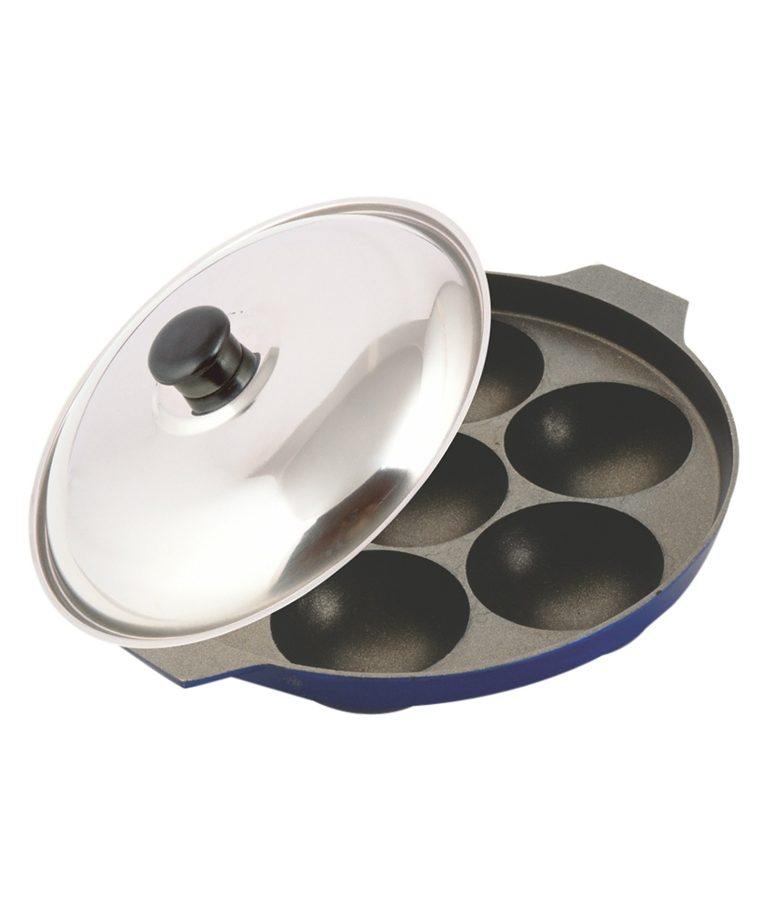

Method of Preparation
- Wash and soak rice poha and urd dal separately for 4-5 hours.
- Drain and blend in a blender together and add salt.
- Transfer the batter in a big vessel and cover and keep to ferment for 6-8 hours.
- Grease the idli molds and pour the batter in each mold.
- Steam the idlies for 15-20 minutes, till done.
- Wash the dal.
- Add it in a pressure cooker with salt and turmeric powder.
- Cook till done.
- Add oil in a pan.
- When the oil is hot, add mustard seeds and curry leaves.
- Add onion and fry for 2 minutes.
- Add tomatoes, brinjal, and sambhar masala.
- Add half a cup of water and cook till brinjal is soft.
- Add the cooked dal and tamarind pulp.
- Cook for another 4-5 minutes.
- Serve hot with idlies.
For Idli:
For Sambhar: